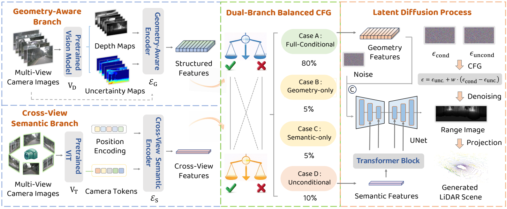
HELLO, I'M
Sizhuo Zhou.
PhD Student
University of Science and Technology of China
& Shanghai Innovation Institute
I am a PhD student at the University of Science and Technology of China, currently undertaking joint doctoral training at the Shanghai Innovation Institute. I have received honors including the National Scholarship and the Provincial Outstanding Graduate distinction. My advisors are Prof. Junchi Yan（国自然青A基金，原国家杰青） and Prof. Juyong Zhang（国家优青）.
My research interests primarily include World Model, AIGC, Autonomous Driving, and LLM Agent.
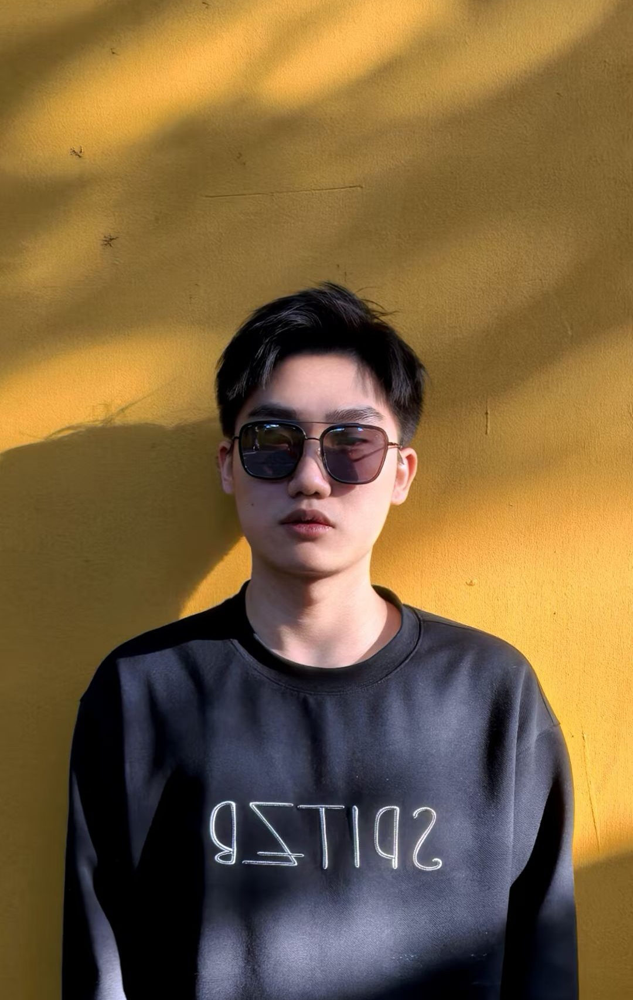
01 / RECENT UPDATES
News.
3 papers have been accepted to NeurIPS 2026.
1 paper has been published in TMLR.
2 papers have been accepted to ECCV 2026.
1 paper has been accepted to ACL 2026.
1 paper has been accepted to CVPR 2026.
1 paper has been accepted to ICLR 2026.
1 paper has been accepted to IEEE TVCG.
02 / ACADEMIC COMMUNITY
Professional Service.
Invited reviewer for the following journals and conferences:
- IEEE TMCSCI Q1
- NeurIPSCCF-A
- ICMLCCF-A
- AAAICCF-A
03 / ACADEMIC WORK
Publications.
2025–26RESEARCH COLLECTION
PUBLICATION ARCHIVE / 2025–202610 publications
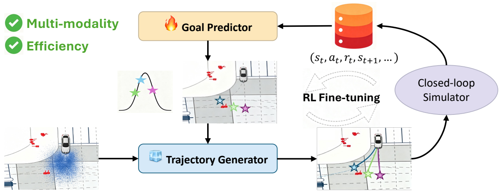
FlashPlanner: Real-Time Goal-Conditioned Flow-Matching Planning for Autonomous Driving with Online RL Fine-Tuning
Accepted · publication forthcoming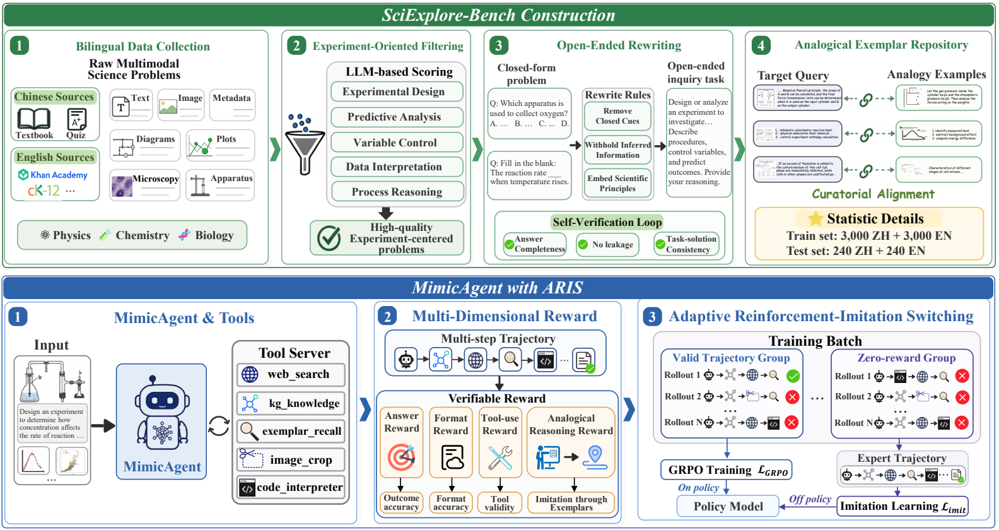
Thinking with Imitation: Adaptive Reinforcement-Imitation Learning for Tool-Augmented Scientific Reasoning
Accepted · publication forthcoming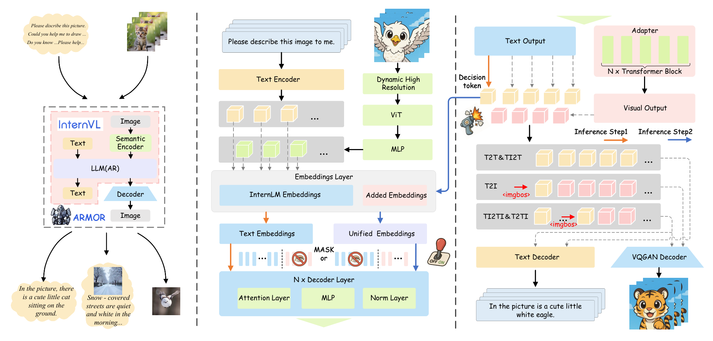
Empowering Multimodal Understanding Model with Interleaved Multimodal Generation Capability
Preprint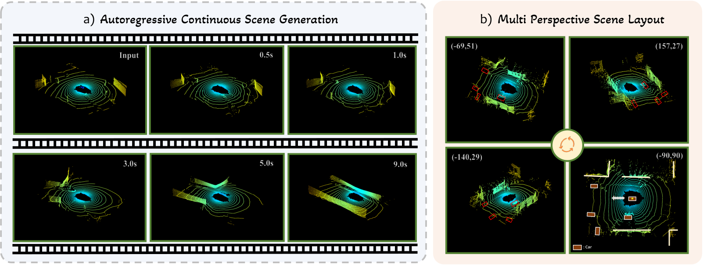
LaGen: Towards Autoregressive LiDAR Scene Generation
Paper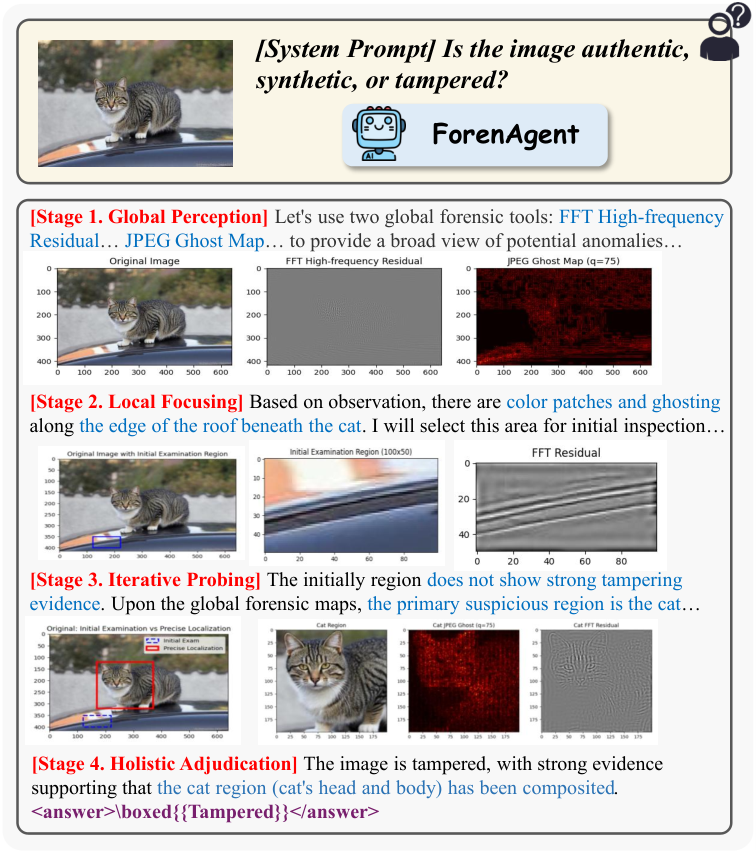
Code-in-the-Loop Forensics: Agentic Tool Use for Image Forgery Detection
Paper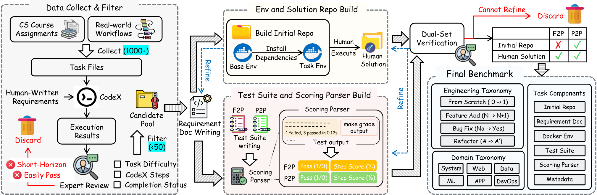
LongCLI-Bench: A Preliminary Benchmark and Study for Long-horizon Agentic Programming in Command‑Line Interfaces
Preprint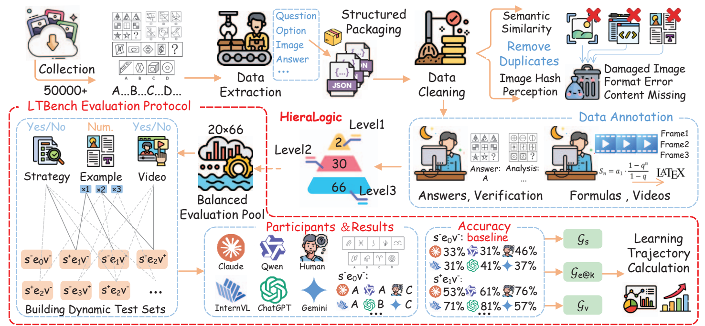
From Static Snapshots to Dynamic Trajectories: Evaluating and Enhancing the Learning Pathways of Multimodal Large Language Models
Paper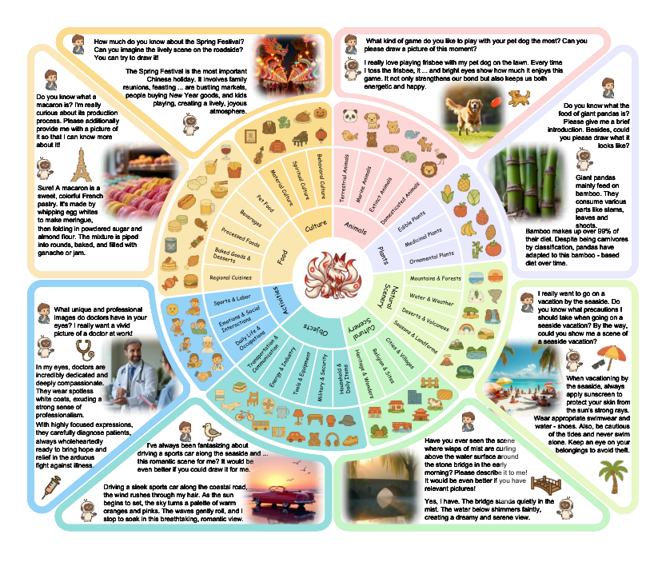
A High Quality Dataset and Reliable Evaluation for Interleaved Image-Text Generation
Paper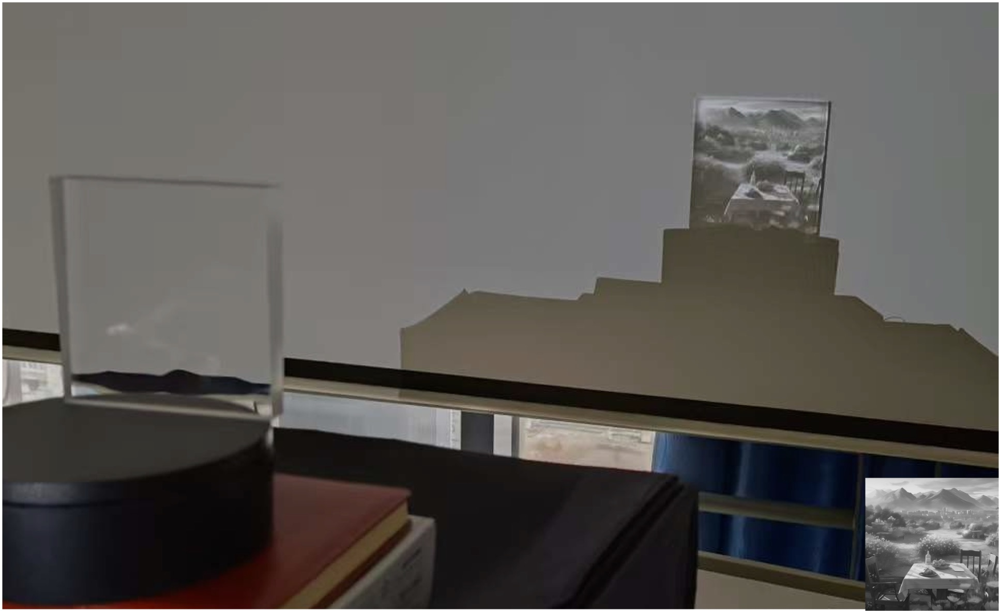
Computational Caustic Design for Surface Light Source
PaperNo matching publications.
Try another title, author or venue.